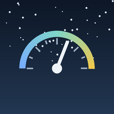

Политика конфиденциальности
Коротко
- Разработчик не получает ваши данные: у приложения нет своего сервера, аналитики и рекламы.
- Всё, что вы записываете, хранится на вашем телефоне и, если вы подключили Яндекс Диск, в папке приложения на вашем Диске.
- Сообщения в чате, давление и сахар, которые видят друзья, зашифрованы: прочитать их можете только вы и тот, кому они адресованы.
- Приложение не является медицинским изделием и не ставит диагноз.
1. Кто обрабатывает данные
Политика описывает, как работает мобильное приложение и веб-версия «Не18мнеуже» (далее — приложение). Приложение создано частным разработчиком (далее — разработчик). Разработчик не собирает, не хранит и не передаёт третьим лицам ваши персональные данные. Их обрабатываете вы сами на своём устройстве и в своём хранилище Яндекс Диск.
2. Какие данные есть в приложении
- Отметки самочувствия — смайлики, время, заметки.
- Показатели здоровья — артериальное давление, пульс, уровень сахара в крови, вес, число шагов, заметки к ним. Что из этого отслеживать, вы выбираете сами.
- Город или местоположение — выбранные вами города и, если вы разрешили, координаты телефона для определения ближайшего города.
- Друзья и переписка — имя, которое вы указали для друзей, список друзей, сообщения чатов, отметки «получено» и «прочитано».
- Настройки — тема оформления, напоминания, расположение элементов.
Показатели здоровья относятся к специальной категории персональных данных. Вы вносите их сами и добровольно; приложение использует их только для того, чтобы показать вам графики, отчёты и связь самочувствия с погодой.
3. Где хранятся данные
- На телефоне — во внутренней памяти приложения. Удаляются вместе с приложением или при очистке его данных.
- На вашем Яндекс Диске (если вы вошли через Яндекс) — в папке, которую Яндекс выделяет приложению. Там лежат резервная копия ваших записей и файлы для друзей. Приложение получает доступ только к этой папке и не видит другие ваши файлы. Хранение регулируется условиями сервиса Яндекс Диск.
4. Что видят друзья
Если вы включили «Поделиться» и пригласили друга, приложение выкладывает в папку на вашем Диске файлы и открывает к ним доступ по ссылке. Эта ссылка есть в приглашении, которое вы отправляете.
- Открыто по ссылке: ваше имя для друзей, выбранный город, смайлики самочувствия за последние 120 дней и текущая погода в вашем городе. Эти сведения может увидеть любой, у кого есть ссылка из приглашения, поэтому отправляйте приглашения только тем, кому доверяете.
- Зашифровано (AES-GCM, ключ знают только вы и приглашённый друг): давление, пульс и сахар — если включён переключатель «Показывать друзьям давление и сахар»; сообщения чатов; отметки о получении и прочтении.
Отметки «прочитано» можно выключить во вкладке «Друзья» → «Отчёты о прочтении». Перестать делиться можно кнопкой «Перестать делиться».
5. Внешние сервисы
Для работы приложение обращается к открытым сервисам. Они видят ваш IP-адрес и то, что указано в таблице, но не получают ваши записи о здоровье.
| Сервис | Зачем | Что получает |
|---|---|---|
| Open-Meteo | прогноз и архив погоды, поиск города | координаты или название города |
| NOAA SWPC, GFZ Потсдам | геомагнитная обстановка | ничего, кроме самого запроса |
| OpenStreetMap (Nominatim), BigDataCloud | название места по координатам | координаты |
| OpenStreetMap, Esri ArcGIS | подложка карты осадков | видимый участок карты |
| Яндекс ID и Яндекс Диск | вход, резервная копия, друзья и чат | файлы в папке приложения |
| GitHub | проверка и загрузка обновлений | ничего, кроме самого запроса |
| Google Fonts | шрифты | ничего, кроме самого запроса |
6. Разрешения на телефоне
- Местоположение — чтобы определить ваш город. Можно не давать и выбрать город вручную.
- Физическая активность — чтобы считать шаги встроенным датчиком телефона. Число шагов по дням хранится только на телефоне и в резервной копии на вашем Яндекс Диске. Можно не давать — тогда шаги просто не считаются.
- Уведомления — напоминания отметить самочувствие и сообщения от друзей.
- Запуск после перезагрузки — чтобы напоминания продолжали работать.
- Установка обновлений — только в версии, скачанной с сайта, чтобы поставить новую версию приложения.
7. Ваши права и удаление данных
- Все ваши данные видны вам в приложении; отчёт можно выгрузить кнопкой «📤 Врачу».
- Отдельные записи удаляются в приложении.
- Чтобы удалить всё: отключите Яндекс Диск в настройках приложения, удалите папку приложения на Диске (раздел «Приложения») и удалите приложение с телефона.
- Доступ приложения к Яндекс ID можно отозвать на странице id.yandex.ru.
8. Не медицинское изделие
«Не18мнеуже» — личный дневник самочувствия и погоды. Цветные пометки («норма», «повышенное»), выводы и прогнозы — справочные подсказки для взрослых. Они не являются диагнозом, не заменяют консультацию врача и не должны использоваться для выбора лечения. Если показатели или самочувствие вас беспокоят, обратитесь к врачу, а в экстренной ситуации — звоните 103 или 112.
9. Дети
Приложение рассчитано на взрослых. Оно не предназначено для детей младше 14 лет и не собирает сведения о возрасте.
10. Изменения и связь
Если политика изменится, новая редакция появится на этой странице с новой датой. По вопросам о данных пишите разработчику через страницу проекта на GitHub.